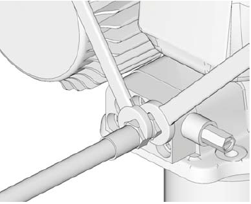
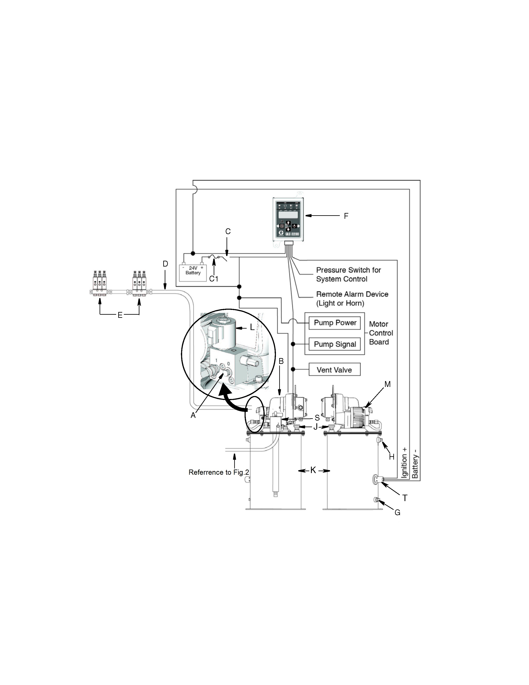
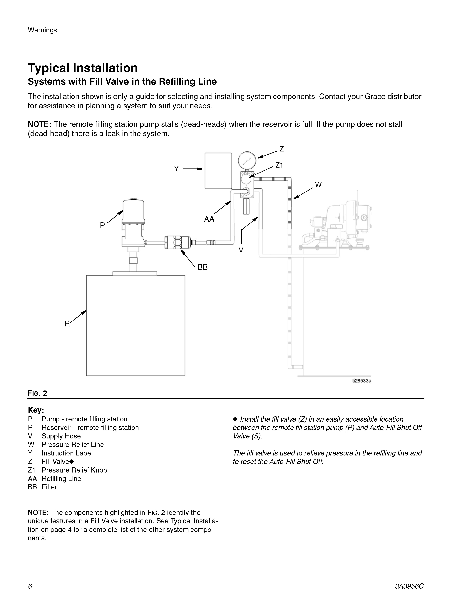
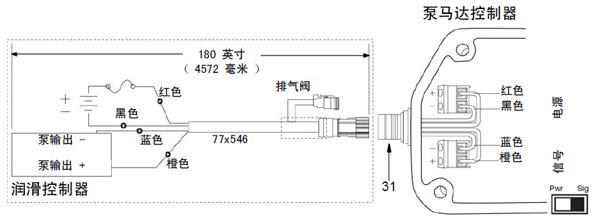
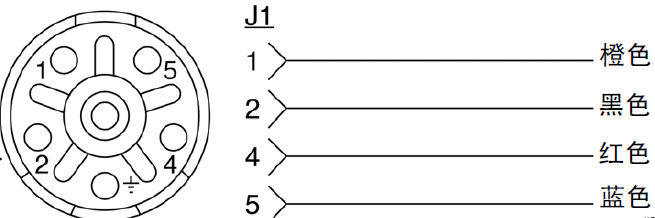
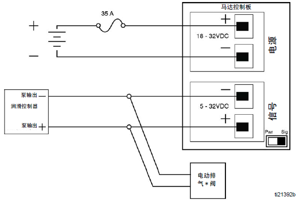
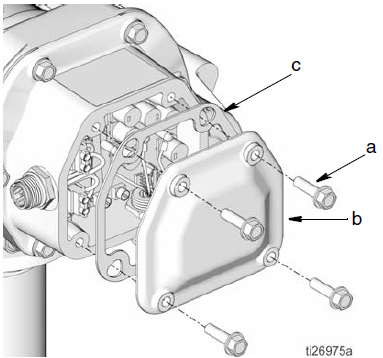
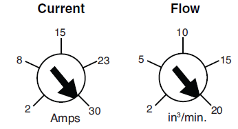

Централизованная система смазки
Централизованная система смазки
Описание
Данная система служит управления однолинейной автоматической системой смазки за счет обеспечения подачи контролируемого количества смазочного материала под давлением, обладает следующими особенностями:
ИП 24В постоянного тока, лубрикатор, клапан сброса давления, станция пополнения с дистанционным управлением, сигнализатор низкого уровня масла
Максимальное рабочее давление: 3500 фунтов на квадратный дюйм (24,1 МПа, 241 бар)
Максимальное давление у заливного отверстия: 5000 фунтов на квадратный дюйм (34 МПа, 344,7 бар)
Установка
Монтажные схемы, показанные на рис. 1 и 2, только используются в качестве руководящей информации о монтаже для выбранной модели. Для удовлетворения определенных потребностей обратитесь к производителю за помощью.
ПРИМЕЧАНИЕ: Если смазочный бак заполнен, то он заставляет станцию пополнения с дистанционным управлением прекратить работу. Если смазочный бак не может заставлять ее прекратить работу, то это свидетельствует о наличии места утечка в системе.
Техническое обслуживание
Периодическое техническое обслуживание должно включать следующие виды работ:
1. Остановить автомобиль в безопасном месте. Кроме использования фрикционной системы торможения, еще нужно надежно удерживать его в неподвижном состоянии другим подходящим методом.
2. Проверить ряд узлов и деталей системы смазки, наблюдать за наличием/отсутствием износа или утечек.
3. Очистить и проверить узлы и детали системы.
4. Проверить надежность фиксации установочных элементов, наличие/отсутствие ослабления крепежных элементов.
5. Следует убедиться в надежной фиксации всех трубопроводов, отсутствии скручивания и нахождении вдали от движущихся частей.
6. Убедиться в достаточном уровне смазки в резервуаре, избегать запуска двигателя при отсутствии смазки в системе.
7. Проверить или отрегулировать контроллер, Довести смазочный цикл системы до требуемой нормы. Как правило, смазочный цикл системы занимает 15 минут.
8. Проверить работоспособность каждой масленки.
9. В случае обнаружения воздуха в трубопроводе, следует удалить воздух из системы.
ПРИМЕЧАНИЕ: Одной из основных причин невозможности нормальной работы системы является попадание воздуха в трубопровод, пузырьки воздуха в трубопроводе может препятствовать создание насосом давления, необходимого для обеспечения нормальной смазки.
Удаление воздуха из трубопровода производится в следующем порядке:
(1) Остановить автомобиль в безопасном месте. Кроме использования фрикционной системы торможения, еще нужно надежно удерживать его в неподвижном состоянии другим подходящим методом.
(2) Отсоединить тройник рядом с насосом или заглушку масленки.
(3) Подключить насос.
(4) Отключить насос в момент начала вытекания смазки через тройник или отверстие под заглушку масленки. Повторять данную процедуру для другого тройника или масленки.
(5) После полного удаления воздуха насос будет создавать давление, необходимое для обеспечения нормальной смазки.
Установка
Порядок сброса давления
ПРИМЕЧАНИЕ: Данное оборудование остается под давлением до тех пор, пока давление не будет сброшено вручную. Следуйте порядку сброса давления при остановке распределения и перед очисткой, осмотром или ремонтом оборудования, чтобы избежать серьезных травм под воздействием жидкости под давлением (например, брызги жидкости, пролитая жидкость, движущиеся детали и т.д.).
С помощью двух монтажных ключей приложите усилие в направлении, противоположном направлению трубки на выходе насоса, только медленно ослабляйте трубку до тех пор, пока из трубки не прекратится вытекание смазка или воздух, чтобы осуществлять сброс давления в системе (см. рис. 3).
Рис. 3 Сброс давления
Заземление
ПРИМЕЧАНИЕ: В целях снижения риска возникновения электростатических искр необходимо соединить оборудование с массой. Электростатические искры могут вызвать появление дыма или взрыв.
Комплектация и подключение системы
Все модели требуют установить предохранители (заготовленные пользователем), чтобы избежать повреждения оборудования.
• Не используйте электрический насос, незащищенный предохранителем.
• Следует установить предохранитель с подходящим напряжением и током на исходной точке питания, рекомендуется использовать резистор 35A.
ПРИМЕЧАНИЕ: Электрический насос оснащен 6-контактным разъемом (используются 4 из контактов).
На рис. 4 показана схема электрических соединений. На рис. 5-8 показана более подробные схемы подключения.
A
Подключение выхода смазки
(отметка «0»)
H
Сливное отверстие
(не используется, если установлено устройство пополнения с дистанционным управлением)
B
Насос
J
Респиратор
C
Пусковой переключатель
K
Смазочный бак
C1
Резистор
L
Предохранительный смазочный клапан
D
Трубка подачи смазки высокого давления
M
Мотор
E
Injector banks
S
Устройство пополнения с дистанционным управлением
F
Контроллер
T
Датчик низкого уровня масла
G
Отверстие для заполнения смазкой (не используется, если установлено устройство пополнения с дистанционным управлением)
Рис. 1 Первая часть централизованной системы смазки
P
Насос пополнения с дистанционным управлением
Z
Клапан пополнения
R
Смазочный бак
Z1
Кнопка сброса давления
V
Трубка подачи масла
AA
Трубка пополнения
W
Трубка сброса давления
BB
Штуцер
Y
Этикетка
Рис. 2 Вторая часть централизованной системы смазки
Клапан пополнения (Z) устанавливается в подходящем месте между насосом пополнения с дистанционным управлением (P) и устройством перекрытия пополнения с дистанционным управлением (S). Клапан пополнения используется для сброса давления и восстановления устройства перекрытия пополнения с дистанционным управлением при пополнении.
Рис. 4 Соединение жгута проводов насоса
КонтактЦвет проводаСоединение1ОранжевыйСигнал +2ЧерныйПитание-4КрасныйПитание+5СинийСигнал -
Рис. 5 Соединительный провод
Рис. 6 Переключатель выбора сигнального режима управления насосом
A+ (плюс) ввод источника питанияHПотенциометр регулятора расхода (минимум: поверните ручку против часовой стрелки/максимум: поверните ручку по часовой стрелке)B- (минус) ввод источника питанияJПереключатель контроллера насоса*
• PWR - включение насоса при подключении питания.
• SIG - включение насоса при наличии напряжения.
- SIG IN -
- SIG IN +CПодключение сигнала -KСоединение синего соединительного провода мотораDПодключение сигнала+LСоединение желтого соединительного провода мотораEКрасный LED (неисправности) - мигающий, сообщение о типе неисправности (см. перечень неисправностей)MСоединение зеленого соединительного провода мотораFЗеленый LED (питания) -
• Мигание: подключение питания, включение насоса
• Постоянное горение: отключения питания/насосаNРазъем J5 - разъем кабеля мотора HallGПотенциометр регулятора тока (минимум: поверните ручку против часовой стрелки/максимум: поверните ручку по часовой стрелке)*Примечание: Перед переключением между режимами PWR и SIG убедитесь в том, что питание насоса отключено.Рис.7 Панель управления насосом
Настройка мотора с регуляторами тока и расхода
Управление и регулирование расходом
1. Снимите болт (a), крышку мотора (b) и прокладку «t» (c) с панели управления (рис. 9).
Рисунок 9
2. Регулировка регулятора тока и регулятора расхода на панели управления мотором производится с использованием ручки потенциометра регулятора тока (G) и ручки потенциометра регулятора расхода (H). Ручка регулятора тока (G) служит для регулирования расхода. При настройке тока и расхода потока в первую очередь проводите настройку тока. Достижимый расход потока может быть ограничен путем настройки тока
• Увеличение установочного значения осуществляется поворотом ручки по часовой стрелке.
• Уменьшение установочного значения осуществляется поворотом ручки против часовой стрелки.
ВНИМАНИЕ: Эти значения определены при температуре окружающей среды 72°F (22°C) и входном напряжении 24В в лабораторных условиях тестирования. Фактические результаты могут отличаться от этих, следует определить на практике.
3. Замените шайбу (c), крышку (b) и винт (d), будьте осторожны, избегайте придавления к любому проводу. Закрутите болт. Затяните болт до достижения момента 17-19 фунт-футов (23-26 Н.м).
Требования к дистанционному управлению пополнением
Система с клапаном пополнения (Z)
Клапан пополнения (Z) устанавливается в подходящем месте между насосом пополнения с дистанционным управлением (P) и устройством перекрытия пополнения с дистанционным управлением (S). Клапан пополнения используется для сброса давления и восстановления устройства перекрытия пополнения с дистанционным управлением при пополнении.
NOTE: если смазочный бак заполнен, то он заставляет насос пополнения с дистанционным управлением прекратить работу, в результате чего давление в системе подачи смазки повышается до максимального давления на выходе насоса пополнения с дистанционным управлением.
Датчик низкого уровня масла (T)
Когда количество смазки достаточно, LED-индикатор горит зеленым цветом. Когда уровень запаса в баке составляет 30% от общего объема (низкий уровень смазки), LED светится янтарным цветом (см. рис. 10 и табл. ниже).
СостояниеЦвет LEDВывод №2 (контакт №2)
(см. рис. 12)Пополнение смазкиЗеленый0 VDCНехватка смазкиЯнтарный24 VDCNOTE:
• Горящий янтарный индикатор свидетельствует о том, что оператор должен пополнять смазочный бак смазкой. В баке все еще осталось смазка, невозможно реагирование на быстрое отключение.
Рис. 10 Датчик низкого уровня масла
Количество смазываемых точек
Описание
Более подробная информация о точках смазки см. в табл. 1. Кроме централизованной смазки, ТС также имеет несколько специальных точек смазки, конкретное расположение и функционирование приведена указаны на рис. 13, в табл. 2 и 3.
Таблица 1. Точки смазывания
Вывод №
Название точки смазывания
Примечание
Вывод №
Название точки смазывания
Примечание
1
Передний подшипник верхней распорной штанги переднего моста
Правая смазочная секция в сборе
20
Шкворень поворотного кулака (верхний)
Левая смазочная секция в сборе
| 2 | Задний подшипник верхней распорной штанги переднего моста |
| 3 | Передний подшипник нижней распорной штанги переднего моста |
| 4 | Задний подшипник нижней распорной штанги переднего моста |
| 5 | Подшипник правого гидроцилиндра поворота (внешний) |
| 6 | Подшипник правого гидроцилиндра поворота (внутренний) |
| 21 | Шкворень поворотного кулака (нижний) |
| 22 | Подшипник рулевой поперечной тяги (левый) |
| 23 | Подшипник цилиндра передней подвески (верхний) |
| 24 | Подшипник цилиндра передней подвески (нижний) |
| 25 | Подшипник левого цилиндра задней подвески (верхний) |
Смазочная секция заднего моста в сборе
| 7 | Шкворень поворотного кулака (верхний) |
| 8 | Шкворень поворотного кулака (нижний) |
| 9 | Подшипник рулевой поперечной тяги (правый) |
| 10 | Подшипник поперечной тяги переднего моста (внешний) |
| 11 | Подшипник поперечной тяги переднего моста (внутренний) |
| 12 | Подшипник цилиндра передней подвески (верхний) |
| 13 | Подшипник цилиндра передней подвески (нижний) |
| 14 | Передний подшипник верхней распорной штанги переднего моста |
| 26 | Подшипник левого цилиндра задней подвески (нижний) |
| 27 | Шарнирный палец кузова (правый) |
| 28 | Подшипник поперечной тяги заднего моста (левый) |
| 29 | Подшипник поперечной тяги заднего моста (правый) |
| 30 | Подшипник правого гидроцилиндра подъема (верхний) |
| 31 | Подшипник правого гидроцилиндра подъема (нижний) |
| 32 | Конусный подшипник |
Левая смазочная секция в сборе
| 15 | Задний подшипник верхней распорной штанги переднего моста |
| 16 | Передний подшипник нижней распорной штанги переднего моста |
| 17 | Задний подшипник нижней распорной штанги переднего моста |
| 18 | Подшипник левого гидроцилиндра поворота (внешний) |
| 19 | Подшипник левого гидроцилиндра поворота (внутренний) |
| 33 | Подшипник правого цилиндра задней подвески (верхний) |
| 34 | Подшипник правого цилиндра задней подвески (нижний) |
| 35 | Шарнирный палец кузова (левый) |
| 36 | Подшипник левого гидроцилиндра подъема (верхний) |
| 37 | Подшипник левого гидроцилиндра подъема (нижний) |
Рис. 13. Смазываемые точки специального назначения
Технические характеристики смазочного масла
A
Трансмиссионное масло - SHC 680/SHC 460
B
Смазка - SHC 460
C
Смазка - SHC 100
D
Смазка – NLGI (0/1/2)
Таблица 2. Технические характеристики смазочного масла
Система
Наименование
Точки смазывания
Тип смазки
Межобслуживаемый промежуток (ч)
250
500
1500
3000/6 месяцев
6000/12 месяцев
1
Передняя опора двигателя
1
D
Заполнение смазкой
2
Электродвигатель вентилятора сетки сопротивления
1
C
Заполнение смазкой
3
Электродвигатель охлаждающего вентилятора электродвигателя
1
C
Заполнение смазкой
4
Коренный подшипник
1
C
Заполнение смазкой по 60 г
5
Приводной вал
1
D
Заполнение смазкой
6
Подшипник приводного двигателя
4
C
Заполнение смазкой по 360 г/шт.
7
Картер
2
A
Фильтрация
Замена
8
Вентилятор мотор-колеса
1
D
Заполнение смазкой
9
Подшипник переднего колеса
2
B
Проверка/замена
Таблица 3. Точки смазывания
Устранение неисправностиВопросыПричинаМетод устраненияОтказ в работе насоса (B), например, невозможность циркуляции, невозможности подачи смазки, медленная работа насоса, горение красного индикатора на панели управления насосом и т.д.Неисправность насоса (B).См. инструкцию на насосУтечка смазки при сбросе давленияЗасорение трубопроводаПоиск места засорения по трубопроводу, удаление засоровНеисправность переключателя давленияПроверка соединения проводаЗамена переключателя давленияСлишком высокое установочное значения переключателя давленияСнижение давления в системеМедленная работа или остановка насоса пополнения (P), холостой выпуск через клапан пополнения (Z). or stalls and no output at the fill valve.Невыполнение восстановления клапана перекрытия пополнения с дистанционным управления (S)Сброс давления из трубки пополнения (AA)Непрерывная работа и невозможность остановки насоса пополнения (P)Утечка из системыПроверка трубки пополнения, устранение место утечкиПереполнение смазочного бака (K) из-за невозможности закрытия трубки пополнения с использованием клапана пополнения с дистанционным управлением (S) Замена клапана пополнения с дистанционным управлениемОтсутствие сообщения о низком уровне масла, но отсутствие подачи смазки насосом
или
невозможность создания давления в системе и отсутствие сообщения об отсутствии давления
Неисправность датчика низкого уровня маслаПроверьте индикатор датчика. Если индикатор светится зеленым цветом, то это свидетельствует о достатке смазки в смазочном баке, но невозможна подача смазки насосом. См. инструкцию по ремонту насоса.Проверьте индикатор датчика. Если индикатор светится желтым цветом, то это свидетельствует о пустом смазочном баке. Проверьте соединительные проводы между датчиком и сигнализатором.Проверьте индикатор датчика. Если индикатор не горит, проверьте соединительные проводы датчика, убедитесь в нормальном питании датчика.Неисправность переключателя давленияПроверка соединительных проводов переключателя давленияОтсутствие давления или низкое давление в системеПроверьте трубопроводы и лубрикатор на наличие утечек, в случае обнаружения проблем, устраните или замените.Горение сигнализатора низкого уровня масла, но достаток смазки в смазочном бакеНеисправность датчика низкого уровня маслаПроверка соединительных проводов датчика
Вспомогательная система–централизованная система смазки
100-0000
Вспомогательная система – централизованная система смазки
100-0000
10
11
Вспомогательная система–централизованная система смазки
100-0000
7
180 дюймов
(4572мм)
Контроллер мотора насоса
Выпускной клапан
Питание
Сигнал
Синий
Синий
Красный
Красный
Оранжевый
Оранжевый
Черный
Черный
Контроллер смазки
Выход насоса -
Выход насоса +
Синий
Красный
Черный
Оранжевый
Электрический выпускной клапан*
Панель управления мотором
Контроллер смазки
Выход насоса
Выход насоса
Питание
Сигнал
Иллюстрации







